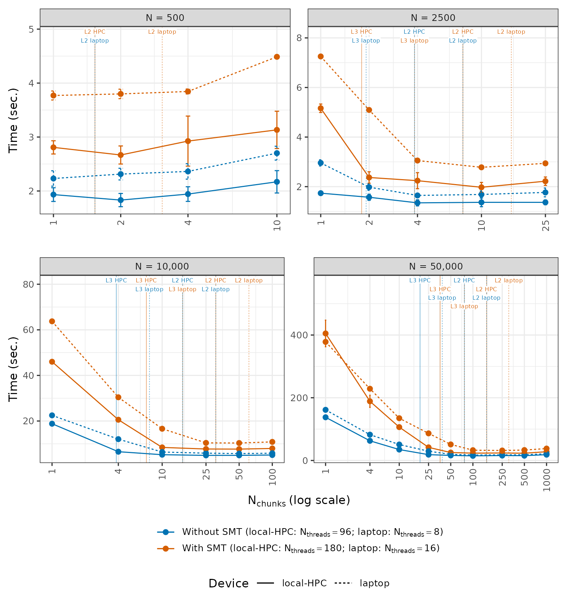
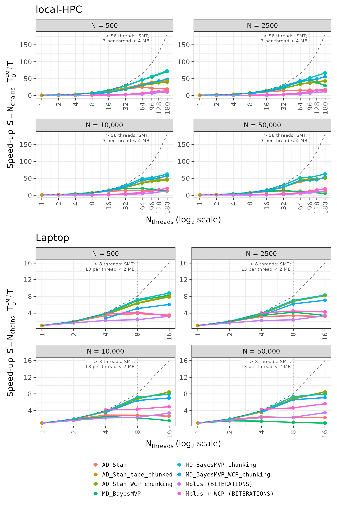

Abstract
We show that cache-aware chunking - a technique used in high-performance computing, but novel in the context of MCMC sampling - can yield large improvements in parallel scaling. Applied to the LC-MVP model implemented in NicoStan+BayesMVP, on a 96-core server, chunking was up to ~17.5× faster, and on a consumer laptop it was up to ~11.9× faster, with the optimal chunk count depending on dataset size and the allocation of threads.
These gains are due to a shift in the computational bottleneck: without chunking, the lp_grad() evaluation is memory-bandwidth-bound, leaving no room for additional threads to contribute. With chunking, more of the data fits within the L2/L3 caches, shifting the computation to a more compute-bound regime. This has an important consequence for simultaneous multithreading (SMT): HMC workloads typically see no benefit - or even degradation - from SMT, whereas chunked NicoStan+BayesMVP achieved SMT efficiency gains of ~20% - 29% on a 96-core AMD server CPU (AMD EPYC 9654), and ~9% - 22% on an 8-core laptop (AMD Ryzen 5800H) - both without 3D V-Cache.
Our results suggested three computational profiles - bandwidth-bound (plain Stan, and NicoStan+BayesMVP without chunking), compute-bound (NicoStan+BayesMVP with chunking), and latency-bound (Mplus) - with predictable consequences for parallel scaling and SMT behaviour.
These parallel scaling results should be interpreted alongside raw efficiency: NicoStan+BayesMVP with chunking is approximately [TBD]× and [TBD]× faster than Mplus and Stan, respectively, in time to achieve a target ESS (at N = 10,000; final values to follow).
Looking ahead, CPUs with larger L3 caches - such as AMD's 3D V-Cache line - would likely amplify these benefits. Furthermore, tape chunking improved the parallel scaling of the Stan model in this study; similar strategies applied to the Stan math C++ library may improve parallel scaling for general Stan models.
The full BayesMVP algorithm and benchmarks, and acceleration of arbitrary Stan models via NicoStan (with preliminary speed-ups of ~1.5-15×), will be described in two upcoming papers.
Key results




Repository contents
| Folder | Contents |
|---|---|
paper_1_chunking_and_parallel_scalability/ | The R scripts for the benchmarks, figures and tables (see Reproducing the results), the Stan models (stan_models/: the unpartitioned model, LC_MVP_bin_PartialLog_v5.stan; the chunked model used for the Stan + chunking configurations, LC_MVP_bin_PartialLog_v5_chunked.stan; and the model used for the Stan tape-chunking and WCP configurations, LC_MVP_bin_PartialLog_v5_reduce_sum_static.stan), and the saved study summaries (paper_1_computational_outputs/, burnin_outputs/) |
paper_1_chunking_and_parallel_scalability/mechanism_study/ | The counter programs (C), run scripts, case lists, and the measured counts and times for the hardware-counter profiling study (Experiment 4) |
paper_1_chunking_and_parallel_scalability/working_set/ | The working set of one gradient evaluation per individual behind the cache-capacity lines and the automatic chunking rule: the array count for NicoStan+BayesMVP (1,608 bytes) and the probe harness which measured the Stan model's autodiff tape (19,152 bytes), with its raw output |
0_utilities/ | Shared R functions, including the simulation of the COVID-19-based LC-MVP datasets and the Stan compilation settings |
1_appendix_pilot_studies/ | The Mplus and Stan pilot-study results, and the NicoStan+BayesMVP pilot-study functions, used for the absolute efficiency comparison (Experiment 3) |
results/data/ | CSV files with every measured configuration (e.g., measured_cases.csv, configurations.csv, scaling.csv, wcp_chunk_search.csv) |
results/figures/, results/tables/ | The figures and tables in the paper and its supplementary material |
Reproducing the results
The benchmarks are run from R, using our R packages NicoStan and BayesMVP (see their installation instructions), as well as BridgeStan and cmdstanr. The Mplus comparisons also require Mplus (commercial software) and the MplusAutomation R package. The other R packages used are listed in 0_utilities/shared_configs/load_R_packages.R.
The folders in this repository follow the same structure as our analysis folder; hence, to run the scripts, set algorithm_study_dir (and the other paths at the top of each script) to the location of this repository on your computer. Note that the Stan models were compiled with the AMD AOCC compiler on Linux; the compiler paths and flags are set in R_fns_alg_paper_1_chunking_WCP_par_scaling.R.
| Script | What it does |
|---|---|
alg_paper_1_chunking_WCP_par_scaling.R | The main sampling benchmark: chunking, WCP and parallel scaling for NicoStan+BayesMVP, the Stan model (via NicoStan) and Mplus, for N = 500, 2,500, 10,000 and 50,000, on the HPC and the laptop |
alg_paper_1_figures_tables.R | The figures and tables, from the saved study summaries (no sampling) |
ps_1_burnin_optimizing_N_chunks_and_WCP_threads.R | The burn-in benchmark (number of chunks and WCP threads for NicoStan+BayesMVP's burn-in) |
alg_paper_1_burnin_report.R | The burn-in figures and tables, from the saved burn-in results |
alg_paper_1_experiment_3_table.R | The absolute efficiency table (time to a target ESS for NicoStan+BayesMVP, Stan and Mplus), from the pilot-study results |
mechanism_study/run_mechanism_experiments.sh, mechanism_study/analyse_mechanism_study.R, mechanism_study/make_paper_figure_exp4.R | The hardware-counter profiling study (Experiment 4): the counter runs, their summaries, and the DRAM bandwidth figure |
working_set/stan/build_and_run.sh | The Stan working-set measurement (stanc, the probe patch, the build, the runs and the fit); working_set/README.md derives both working sets |
Note that the complete saved run outputs are not included here because of their size (over 200 GB). Hence, alg_paper_1_experiment_3_table.R also needs the saved outputs of our NicoStan+BayesMVP pilot study (or a re-run of that study) for its NicoStan+BayesMVP rows.
Linux commands for hardware-counter profiling
This section lists the commands which we ran from a Linux terminal (i.e., the Bash command line) for the hardware-counter profiling in Experiment 4 (see the paper for the design and the results), on both the local-HPC and the laptop. In the listings, text after a # is a comment (i.e., it is not run), and a \ at the end of a line means that the command continues on the next line. A file's extension shows its type: .c is C source code, .R an R script, .py a Python script, .sh a shell script, and .csv a plain-text table. The programs and scripts named below are in paper_1_chunking_and_parallel_scalability/mechanism_study/.
The full details of design (v) of Experiment 4 (CPU temperature, package power, top-down and floating-point counters, and BayesMVP's vectorised maths functions vs. stan::math, at 360 W and 400 W) are on a separate page.
Both machines run Pop!_OS 22.04 (with Linux kernel 6.12 on the local-HPC, and 6.5 on the laptop), and all programs below were compiled using GCC 11.4. The counters were read via the Linux kernel's perf_event_open interface (rather than the perf tool), by two small C programs (pmc_stat and umc_stat). More specifically, pmc_stat runs a command and records the CPU's own hardware counters for every thread of that command (user space only), whereas umc_stat records the DRAM traffic at the memory controllers of the whole machine (local-HPC only). Both programs append the running totals of the counters to a CSV file whenever they receive the SIGUSR1 signal (i.e., a short message from another running program, telling it to act immediately), which we sent around each sampling call.
Checking the CPU topology and the available counters
On each machine, we first checked the CPU and its caches, which logical CPUs share a physical core (SMT) and an L3 cache (i.e., a CCX; one per CCD on the local-HPC), and which counters the kernel exposes:
lscpu | grep -E "Model name|Thread|Core|Socket|L2 cache|L3 cache|NUMA node"
free -g
cat /sys/devices/system/cpu/cpu*/topology/thread_siblings_list | sort -u
cat /sys/devices/system/cpu/cpu*/cache/index3/shared_cpu_list | sort -u
cat /proc/sys/kernel/perf_event_paranoid
ls /sys/bus/event_source/devices/Here, lscpu lists the details of the CPU, free -g shows the amount of RAM (in GiB), cat prints the contents of a file, and ls lists the contents of a folder; the files under /sys and /proc are where the Linux kernel reports the hardware details and settings. On the local-HPC, logical CPUs k and k + 96 are the two SMT threads of the same physical core, and each CCD consists of 8 consecutive physical cores (i.e., CPUs 0-7 and 96-103 share one L3 cache, CPUs 8-15 and 104-111 share the next, and so on). On the laptop, CPUs 2k and 2k + 1 are the two SMT threads of the same physical core, and all 16 CPUs share the one L3 cache. The layout of each CPU is shown in the CPU topology figures in the paper, in which each thread is labelled with its logical CPU number.
Furthermore, on the local-HPC, we checked the memory type, and the encoding of the memory-controller counters (which are only listed once the AMD uncore driver has been loaded; see Enabling the counters):
cat /sys/devices/system/edac/mc/mc0/rank0/dimm_mem_type # Registered-DDR5
cat /sys/bus/event_source/devices/amd_umc_0/type
cat /sys/bus/event_source/devices/amd_umc_0/format/event # config:0-7
cat /sys/bus/event_source/devices/amd_umc_0/format/rdwrmask # config:8-9Enabling the counters
The per-process counters used by pmc_stat can be read without root access under the default kernel setting (kernel.perf_event_paranoid = 2). However, the memory-controller counters are system-wide; hence, umc_stat requires the AMD uncore driver to be loaded, and this setting to be lowered to 0 or below. Therefore, we ran the following on both machines before the profiling (these commands only last until the machine is restarted):
sudo modprobe amd_uncore
sudo sysctl kernel.perf_event_paranoid=-1Here, sudo runs a command with administrator (i.e., root) rights, modprobe loads a kernel module (i.e., a driver), and sysctl changes a kernel setting. After the profiling, the default setting can be restored using:
sudo sysctl kernel.perf_event_paranoid=2Counter events
pmc_stat records six events, one for each core counter on these AMD CPUs; hence, the events did not need to be multiplexed:
- (i) CPU cycles and instructions, using the kernel's generic hardware events (
PERF_COUNT_HW_CPU_CYCLESandPERF_COUNT_HW_INSTRUCTIONS). - (ii) L1 data-cache fills by where the data came from, using AMD event
PMCx044(Zen 3 and Zen 4), as the raw events:0x0144(the core's own L2 cache);0x0244(the L3 cache of the same CCX, or the L2 cache of another core in the same CCX; i.e., the same CCD on the local-HPC);0x1444(a cache in another CCX, i.e., another CCD on the local-HPC); and0x4844(DRAM or I/O).
umc_stat opens event 0x0a (CAS commands) on each of the 12 memory-controller counters of the local-HPC (amd_umc_0 to amd_umc_11), with rdwrmask set to 1 for reads (config = 0x10a) and to 2 for writes (config = 0x20a). Each CAS command transfers one 64-byte cache line; hence, the DRAM traffic (in bytes) is 64 times the number of CAS commands, summed over the 12 memory controllers.
Building and calibrating the counter programs
The counter and calibration programs were compiled using:
gcc -O2 -Wall -o pmc_stat pmc_stat.c # laptop: without -Wall
gcc -O2 -Wall -o umc_stat umc_stat.c # local-HPC only
gcc -O2 -o calibrate_cache_levels calibrate_cache_levels.c
gcc -O2 -o stream_read stream_read.c # local-HPC onlyHere, gcc is the GNU C compiler, which turns each C source file into a runnable program; -O2 turns on the compiler's standard optimisations, -Wall turns on its warnings, and -o gives the name of the resulting program.
Before the profiling, we checked that the counters attribute memory accesses to the expected level of the memory hierarchy. More specifically, calibrate_cache_levels follows a random chain of pointers through a working set of a given size (so that each access depends on the previous one, and hence cannot be prefetched), and stream_read fills a 1 GiB array and then reads it sequentially, five times. The working sets were chosen to fit within the L2 cache, fit within the L3 cache, or exceed the L3 cache available to a single core (256 MiB; although the local-HPC has 384 MB of L3 cache in total, a single core only uses the 32 MB L3 cache of its own CCD), and the sleep runs measure the background DRAM traffic from other programs. On the local-HPC:
for kib in 256 8192 262144; do
taskset -c 5 ./pmc_stat cal_HPC.csv ws_${kib}KiB -- \
./calibrate_cache_levels $kib 20000000 > /dev/null
done
./umc_stat cal_umc.csv chase_256MiB -- ./calibrate_cache_levels 262144 20000000 > /dev/null
./umc_stat cal_umc.csv idle_3s -- sleep 3
./umc_stat umc_cal2.csv stream_1GiB_x5 -- ./stream_read > /dev/null
./umc_stat umc_cal2.csv idle_2s -- sleep 2and on the laptop:
for kib in 128 2048 8192 262144; do
./pmc_stat cal.csv ws_${kib}KiB -- ./calibrate_cache_levels $kib 20000000 > /dev/null
doneHere, ./ runs a program from the current folder, taskset -c 5 runs a program on CPU 5 only (i.e., it pins the program to that CPU), > /dev/null discards the program's printed output, and for ... do ... done repeats the command for each working-set size.
Running the profiling cases
The cases for designs (i)-(iv) of Experiment 4 were written to one CSV file per machine (128 cases on the local-HPC, and 85 on the laptop) using:
python3 make_mechanism_cases.py HPC # writes cases_HPC.csv
python3 make_mechanism_cases.py Laptop # writes cases_Laptop.csvand the 28 DRAM-traffic cases of design (i) were written to cases_HPC_E5.csv. Each list was then run using run_mechanism_experiments.sh:
nohup setsid bash run_mechanism_experiments.sh HPC > /dev/null 2>&1 < /dev/null &
nohup setsid bash run_mechanism_experiments.sh Laptop > /dev/null 2>&1 < /dev/null &
## local-HPC: re-run of any incomplete cases, followed by the DRAM-traffic cases of design (i):
nohup setsid bash -c 'bash run_mechanism_experiments.sh HPC;
bash run_mechanism_experiments.sh HPC cases_HPC_E5.csv umc' \
> /dev/null 2>&1 < /dev/null &Here, python3 and bash run a Python script and a shell script, respectively; nohup and setsid keep the script running after the terminal is closed, & runs it in the background, and > /dev/null 2>&1 < /dev/null detaches it from the terminal (its progress is written to log files instead). This script skips any completed case; hence, failed cases were re-run by calling it again (as in the last command above).
For every case, this script runs the following command, which starts a fresh R session under pmc_stat and runs the case via mechanism_case.R (with the values in angle brackets taken from the case list):
MECH_ALGORITHM=<algorithm> MECH_N=<N> MECH_CHUNKS=<N_chunks> \
MECH_CHAINS=<N_chains> MECH_THREADS_PER_CHAIN=<N_threads_per_chain> \
MECH_N_ITER=<n_iter> MECH_N_ITER_SHORT=2 MECH_SEED=1000 MECH_LABEL=<label> \
MECH_RESULTS_FILE=mechanism_times_<device>.csv OMP_NUM_THREADS=1 \
timeout 3600 taskset -c <CPU list> \
./umc_stat mechanism_umc_HPC.csv <label> -- \
./pmc_stat mechanism_counts_<device>.csv <label> -- \
Rscript mechanism_case.RHere, each NAME=value at the start sets an environment variable for that one command, timeout 3600 stops the case if it runs for longer than one hour, and Rscript runs an R script from the terminal (i.e., without RStudio). taskset was only used for the pinned cases (in designs (ii)-(iv)), and umc_stat only for the DRAM-traffic cases of design (i). The CPU lists used for pinning were (all on the local-HPC, except the last):
- one CCD:
0-7; - eight CCDs (one core each):
0,8,16,24,32,40,48,56; - 8 physical cores of one CCD, including their SMT threads:
0-7,96-103; - 16 physical cores over two CCDs (no SMT):
0-15; - the 8 physical cores of the laptop (one SMT thread each):
0,2,4,6,8,10,12,14.
Within mechanism_case.R, the counters are recorded after the untimed warm-up, short sampling and long sampling calls, by sending SIGUSR1 to both programs (whose process IDs - i.e., the numbers which identify each running program - are passed to R as environment variables):
tools::pskill(pid = as.integer(Sys.getenv("PMC_STAT_PID")), signal = tools::SIGUSR1)
tools::pskill(pid = as.integer(Sys.getenv("UMC_STAT_PID")), signal = tools::SIGUSR1)Finally, the counters and timings were summarised, and the DRAM bandwidth figure of Experiment 4 was produced, using:
Rscript analyse_mechanism_study.R
Rscript make_paper_figure_exp4.RHow to cite
@misc{Cerullo_2026_cache_aware_chunking,
title = {Cache-aware chunking dramatically improves parallel scaling for {HMC} with autodiff and manual gradients: Application to multivariate probit model in {Stan} and {NicoStan}/{BayesMVP}},
author = {Cerullo, Enzo and Carter, Olivia and Jones, Hayley E. and Lucas, Tim and Cooper, Nicola J. and Sutton, Alex J.},
year = {2026}
}